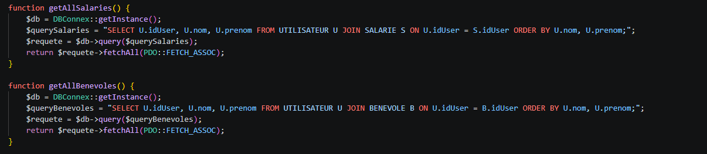
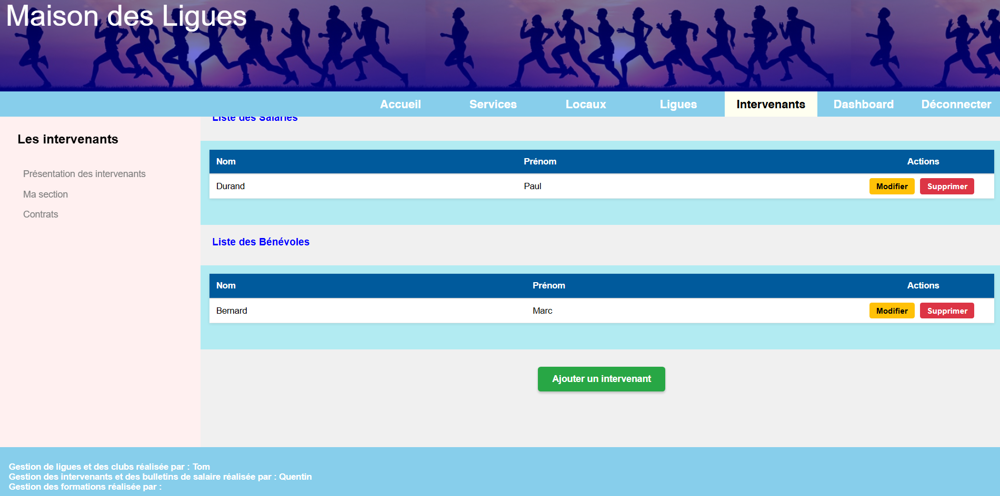
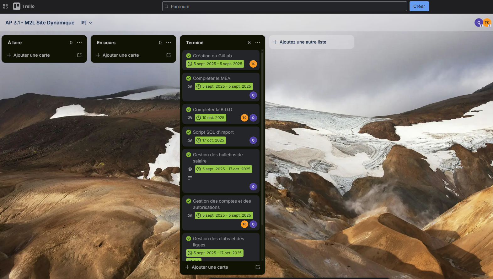
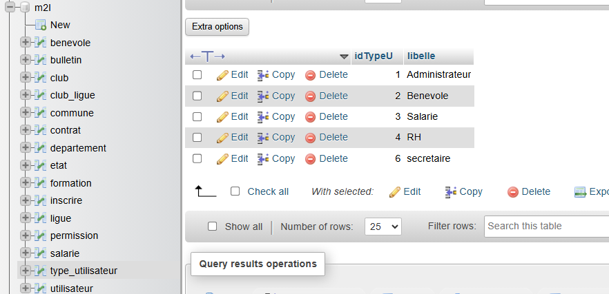
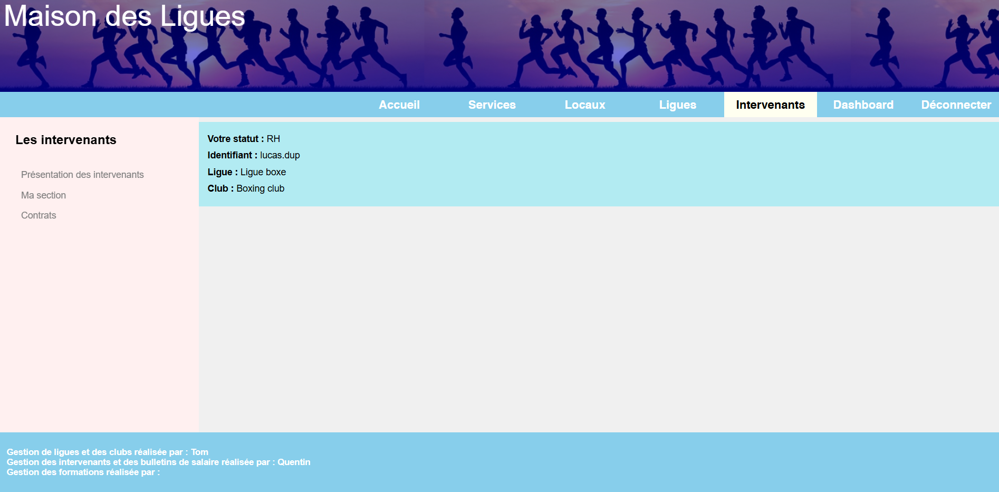

Site Dynamique M2L
HTML, CSS, PHP, SQLContexte du Projet
Le projet global consiste en la création d'un site web dynamique pour la Maison des Ligues de Lorraine (M2L). Le besoin général inclut la gestion d'une base de données et le développement d'une interface web publique et privée complète.
Ma Réalisation (Partie B)
J'ai été spécifiquement chargé du module d'administration des profils. En partant d'une base de données existante (dont l'ébauche du MEA avait été fournie), ma mission a consisté à le compléter. J'ai ensuite assuré le développement de l'interface web permettant la gestion complète des intervenants, ainsi que le téléversement (upload) et la mise à disposition de leurs bulletins de salaire.
Compétences rattachées et validées
- Développer la présence en ligne de l'organisation
- Participer à l'évolution d'un site Web
exploitant les données de l'organisation :
À partir d'une base d'application statique qui nous avait été fournie, mon équipe et moi, avons collaboré
pour faire évoluer le site web de la M2L en site dynamique. Chacun ayant une mission attribuée, j'ai pris
en charge ma partie en développant l'espace de la gestion des intervenants. Cette interface permet de gérer
et d'exploiter efficacement les données des intervenants enregistrées dans la base de données. Concrètement,
l'intégration de scripts PHP et de requêtes SQL sous le modèle MVC permet d'injecter directement ces données
dans les vues, garantissant un affichage qui s'actualise tout seul à chaque modification.


- Participer à l'évolution d'un site Web
exploitant les données de l'organisation :
À partir d'une base d'application statique qui nous avait été fournie, mon équipe et moi, avons collaboré
pour faire évoluer le site web de la M2L en site dynamique. Chacun ayant une mission attribuée, j'ai pris
en charge ma partie en développant l'espace de la gestion des intervenants. Cette interface permet de gérer
et d'exploiter efficacement les données des intervenants enregistrées dans la base de données. Concrètement,
l'intégration de scripts PHP et de requêtes SQL sous le modèle MVC permet d'injecter directement ces données
dans les vues, garantissant un affichage qui s'actualise tout seul à chaque modification.
- Travailler en mode projet
- Planifier les activités :
La gestion de ce projet s'est faite de manière agile en utilisant l'outil Trello. Cela nous a permis
d'organiser nos différents sprints, de répartir avec précision les tâches de développement front-end
et back-end entre les membres de l'équipe et d'assurer un suivi rigoureux de notre avancement.

- Planifier les activités :
La gestion de ce projet s'est faite de manière agile en utilisant l'outil Trello. Cela nous a permis
d'organiser nos différents sprints, de répartir avec précision les tâches de développement front-end
et back-end entre les membres de l'équipe et d'assurer un suivi rigoureux de notre avancement.
- Gérer le patrimoine informatique
- Mettre en place et vérifier les niveaux d'habilitation associés à un service : Pour garantir la sécurité de l'espace d'administration du site M2L, j'ai implémenté un système de gestion des rôles approfondi. J'ai configuré différents niveaux d'habilitation (Salarié, Bénévole, RH, Admin, Secrétaire) assurant que chaque utilisateur accède uniquement aux données et fonctionnalités qui lui incombent.

